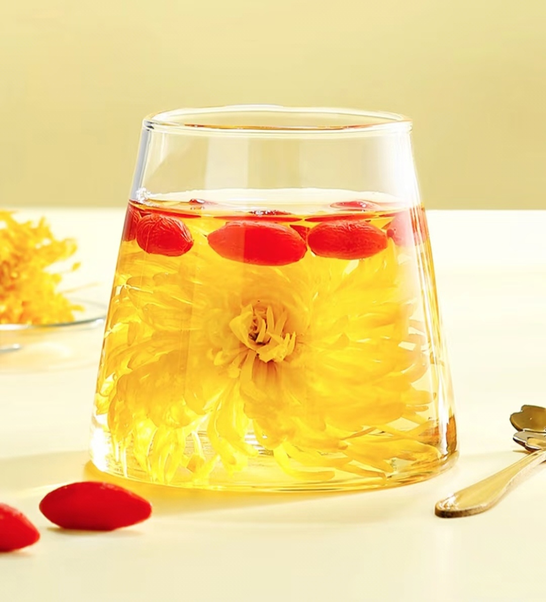
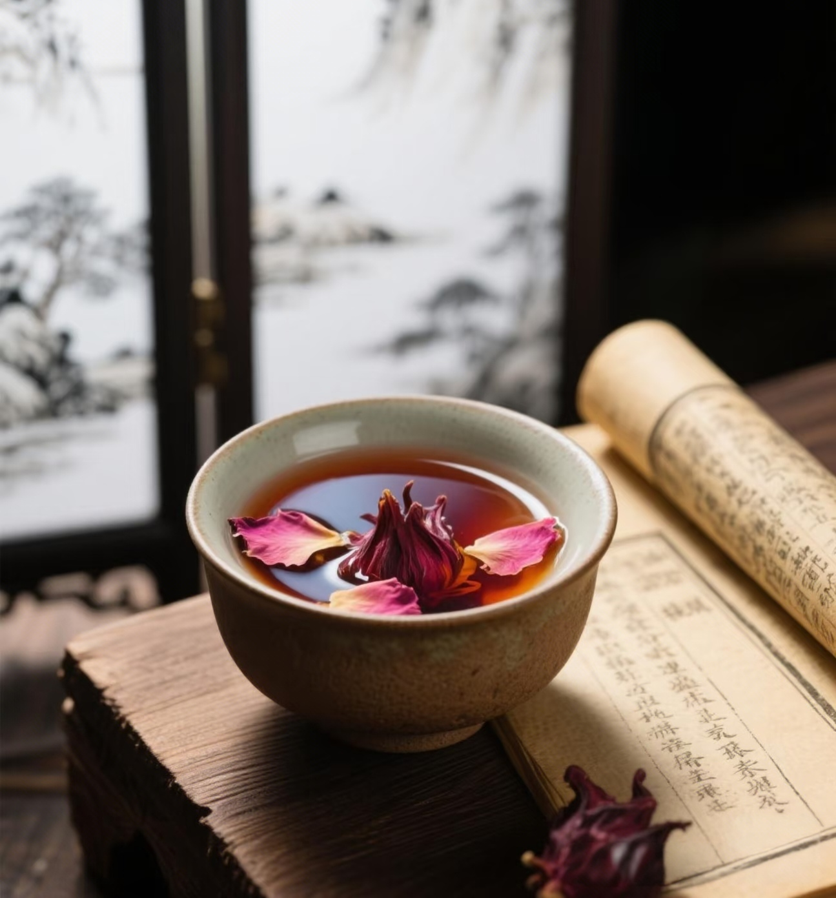
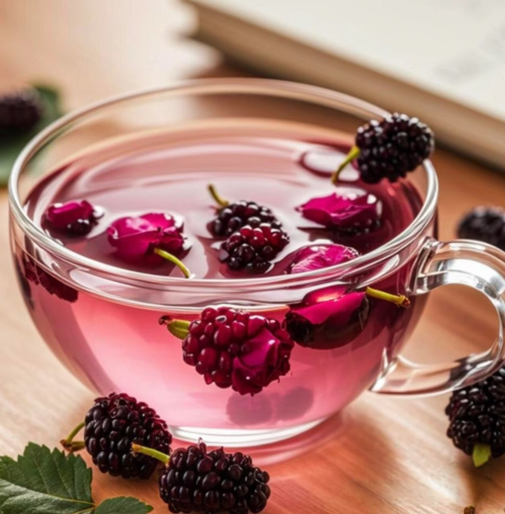
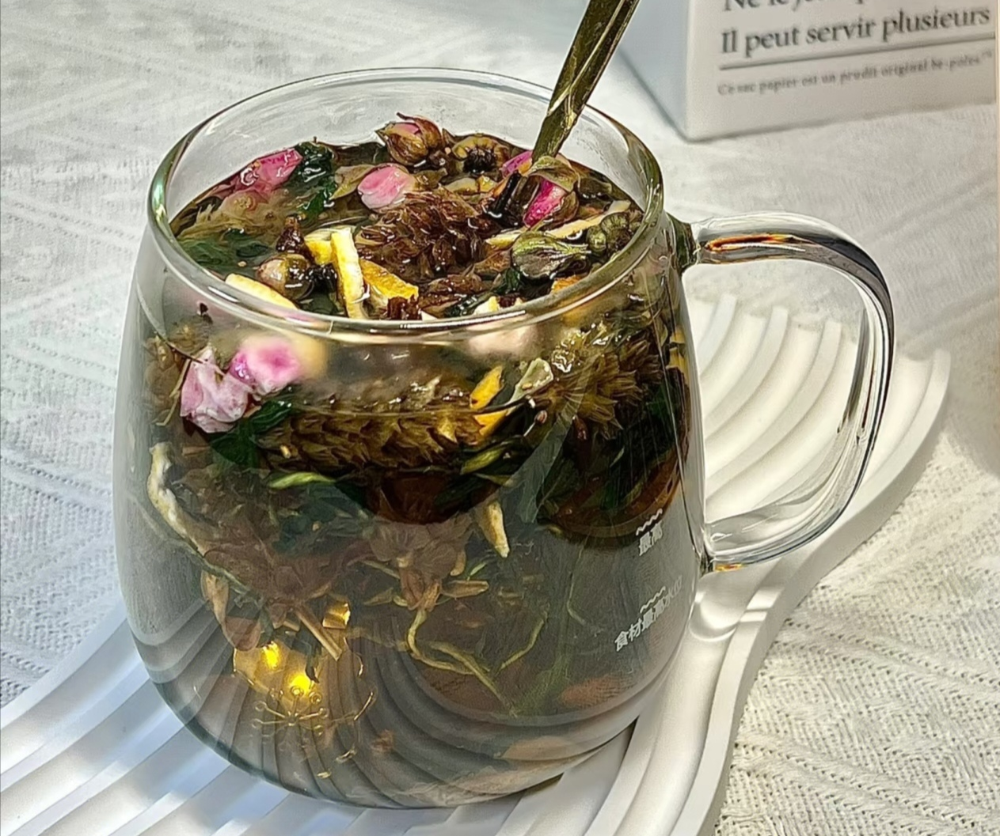
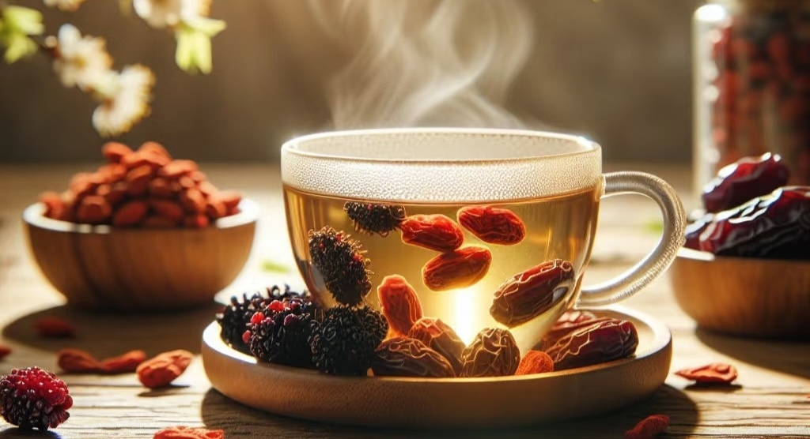
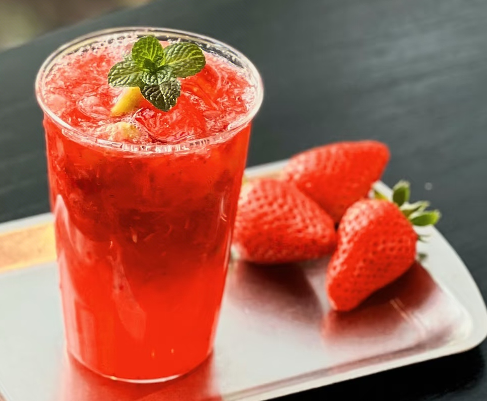
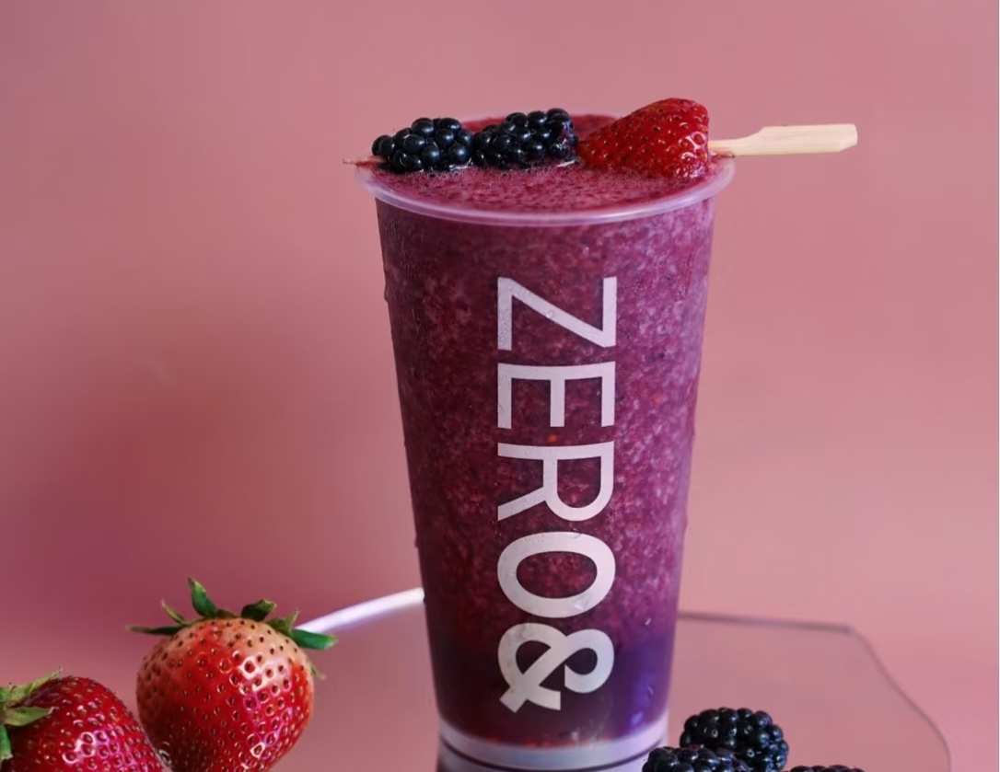
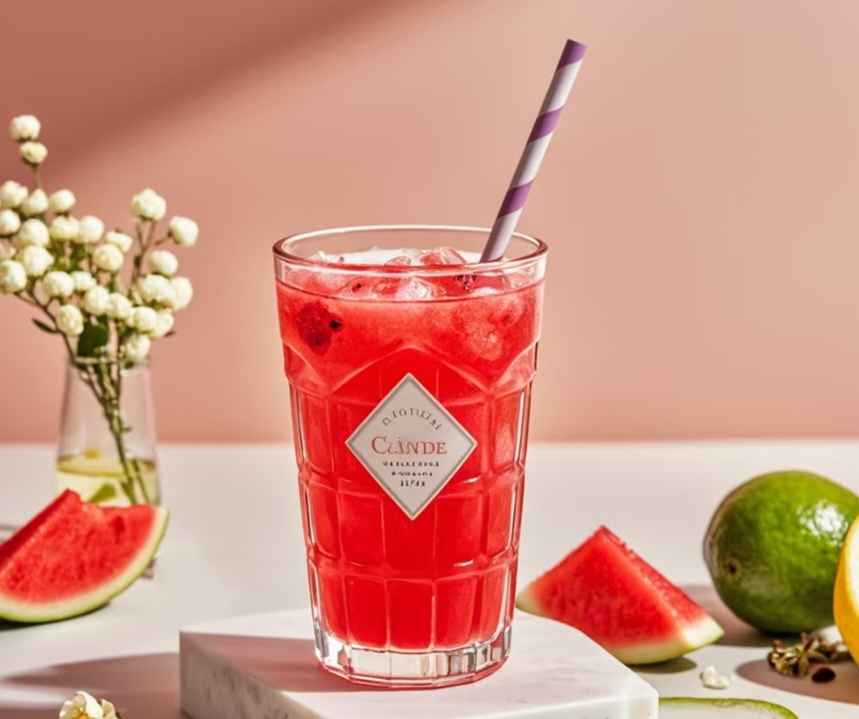

中药养生茶
白菊花茶

- 功效:
- 平肝潜阳：有助于缓解肝阳上亢引起的头痛、眩晕等症状。
- 清肝明目：可清泻肝火，保护眼睛，改善眼睛红肿、干涩、视物模糊等情况。
- 清热解毒：能帮助清除体内热毒，对于热毒引起的疮疡肿毒等有一定的缓解作用。
- 适用人群:
- 肝火旺盛者：有烦躁易怒、目赤肿痛等表现的人群，饮用白菊花茶可清肝泻火
- 长期用眼者：如经常面对电脑、手机的上班族和学生，能缓解眼睛疲劳、干涩，保护视力。
- 高血压患者：对肝阳上亢型高血压患者，有一定的辅助降压作用，可缓解头晕、头痛等症状。
玫瑰花茶

- 功效:
- 疏肝解郁：有助于缓解情绪抑郁、焦虑，改善心情，让人心情舒畅。
- 美容养颜:含有丰富的维生素C、花青素等抗氧化物质,可促进血液循环,减少色斑形成,使肌肤红润有光泽。
- 调经止痛：对女性月经不调、痛经等有一定的缓解作用，能调节内分泌，减轻经期不适。
- 适用人群:
- 情绪调节：适合压力大、情绪易波动、焦虑抑郁人群，可舒缓情绪。
- 女性健康：对月经不调、痛经女性有益，还能美容养颜。
- 心血管养护：含抗氧化成分，利于降血脂、防动脉硬化，适合关注心血管健康者。
菟丝子茶
- 功效:
- 补肾益精：可滋补肾脏，改善腰膝酸软、阳痿早泄等肾虚症状，调养男女生殖系统。
- 养肝明目：滋养肝脏，缓解肝肾不足导致的视物模糊等眼部不适。
- 安胎：孕妇胎动不安时，适量饮用可辅助安胎。
- 适用人群:
- 肾虚者：适用于肾阴虚或肾阳虚，有腰膝酸痛、性功能减退症状者。
- 特殊孕妇：胎动不安的孕妇在医生指导下饮用，有辅助安胎作用。
- 脾虚泄泻者：对脾胃虚弱、腹泻人群有健脾止泻功效。
三七花茶
- 功效:
- 活血化瘀：可促进血液循环，消散瘀血，辅助治疗跌打损伤，预防血栓。
- 降血压血脂：能扩张血管、调节血脂，利于高血压、高血脂患者维持心血管健康。
- 清热解毒：缓解目赤肿痛、咽喉肿痛等上火症状。
- 镇静安神：调节神经系统，改善焦虑、失眠
- 适用人群:
- 心血管疾病患者：高血压、高血脂患者适量饮用，辅助控病情、护心血管。
- 易上火人群：可缓解牙龈肿痛、口腔溃疡等上火症状。
- 压力大失眠人群：助于缓解焦虑，改善睡眠
- 血瘀体质人群：改善面色晦暗、皮肤瘀斑等血瘀症状。
桑葚茶

- 功效:
- 贫血人群：适合缺铁性贫血者，补充营养改善贫血。
- 便秘人群：促进肠道蠕动，缓解便秘，呵护肠道健康。
- 免疫力低下者：适合体弱易感冒人群，增强机体免疫力。
- 抗衰爱美者：助力追求年轻者内调养颜，延缓衰老。
- 适用人群:
- 贫血人群：适合缺铁性贫血，补充营养改善病症。
- 便秘人群：促进肠道蠕动，缓解便秘护肠道。
- 免疫力低下者：适合体弱易感冒人群，增强免疫。
- 抗衰爱美者：助力内调养颜，实现抗衰。
麦冬茶
- 功效:
- 润肺止咳：麦冬归肺经，滋阴润肺，缓解肺燥干咳、咽喉干痛。
- 益胃生津：滋养胃阴，改善口干、胃痛、便干等胃阴不足症状。
- 清心除烦：清降心火，减轻心烦失眠、心悸。
- 润肠通便：黏液质促进肠道蠕动，改善肠燥便秘 。
- 适用人群:
- 肺燥咳嗽者：缓解干咳少痰、咽干等肺部不适。
- 胃阴不足者：改善口干、食欲不振、胃脘嘈杂等症状。
- 心烦失眠者：调理心火旺盛引起的心烦失眠。
- 便秘人群：润肠通便，改善肠燥便秘。
夏枯草茶

- 功效:
- 清肝泻火：能清泻肝火，缓解肝火上炎所致的目赤肿痛、头痛眩晕等症状。
- 散结消肿：可消散郁结，对瘰疬、瘿瘤等有一定的调理作用。
- 清热解毒：有清热解毒之效，有助于清除体内热毒，改善咽喉肿痛等症状。
- 适用人群:
- 肝火旺盛者：适合有目赤肿痛、急躁易怒、头痛等肝火旺盛表现的人群。
- 甲状腺结节患者：其散结消肿的功效，对甲状腺结节、颈部淋巴结肿大等有一定辅助调理作用。
- 咽喉肿痛者：可帮助缓解热毒蕴结所致的咽喉肿痛、声音嘶哑等症状。
灵芝茶
- 功效:
- 增强免疫力：灵芝多糖激活免疫细胞，提升抗病力。
- 安神助眠：调节神经，改善失眠多梦与健忘。
- 保护心血管：降血脂、改善血黏度，护心防冠心病、高血压。
- 抗氧化：清除自由基，延缓衰老、养颜 。
- 适用人群:
- 免疫力低下者：易感冒生病人群，饮用可提升免疫力。
- 睡眠障碍者：改善失眠、多梦、易醒等睡眠问题。
- 心血管疾病患者：辅助调理高血压、高血脂、冠心病等病症。
- 中老年人：助力延缓衰老，预防慢性疾病。
花草茶 - 自然之味
探索花草茶的美妙世界

什么是花草茶？
花草茶(Herbal Tea)，又称草本茶或药草茶，是以植物的花、叶、根、茎、果实或种子等部分为原料，经过干燥后单独或混合冲泡而成的饮品。与传统茶叶(如绿茶、红茶等,源自茶树Camellia sinensis)不同，花草茶通常不含咖啡因，具有天然香气和多样化的保健功效。
花草茶的种类
花类花草茶:
- 菊花茶：清热明目，降火（分杭白菊、胎菊、野菊等。
- 玫瑰花茶：舒缓情绪，改善睡眠。
- 金银花茶：清热解毒，缓解咽喉肿痛。
- 薰衣草茶：舒缓压力，助眠安神。
- 桂花茶：暖胃散寒，润肺止咳。
- 洛神花：富含维C,酸甜口感，降脂降压。
叶茎类花草茶:
- 薄荷茶：清凉提神，缓解腹胀、头痛。
- 柠檬草茶：促进消化，抗菌消炎。
- 甜叶菊茶：天然甜味剂，适合控糖人群。
- 马鞭草茶：利尿消肿，缓解腿部疲劳。
果实种子类花草茶:
- 枸杞茶：补肝肾，明目抗衰老。
- 决明子茶：清肝明目，润肠通便。
- 山楂茶：消食化积，降脂健胃。
- 无花果茶：润肺通便，富含膳食纤维。

草莓水果茶
草莓富含维生素C和抗氧化剂，与绿茶搭配，能增强免疫力、促进消化，让您活力满满。
橙子水果茶
橙子含有丰富的维生素和类黄酮，融入红茶后，可帮助预防感冒、舒缓压力，身心愉悦。
柠檬水果茶
柠檬富含维生素C和柠檬酸，与红茶搭配，可美白肌肤、提神醒脑，活力无限。

蓝莓水果茶
蓝莓含有丰富的花青素和抗氧化物质，配上绿茶，能增强记忆力、保护眼睛，智慧加倍。

西瓜水果茶
西瓜水分充足且富含多种维生素，搭配薄荷茶，可清热解暑、利尿消肿，身心舒畅。
柚子水果茶
柚子含有柚皮苷和多种维生素，搭配绿茶，能理气化痰、润肺清肠，改善呼吸。
葡萄水果茶
葡萄含有类黄酮和白藜芦醇，与黑茶搭配，能抗氧化、预防心血管疾病，守护健康。
樱桃水果茶
樱桃富含铁元素和生物活性成分，搭配水果茶，可补血养颜、抗炎止痛，美丽常驻。
养生小贴士
- 水果茶建议现泡现喝，以保留最佳营养成分。
- 根据个人体质选择合适的水果和茶叶搭配。
- 睡前不宜饮用过多水果茶，以免影响睡眠。